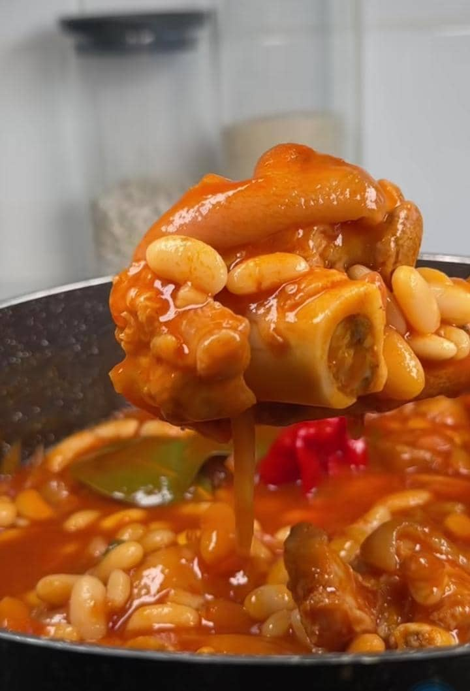
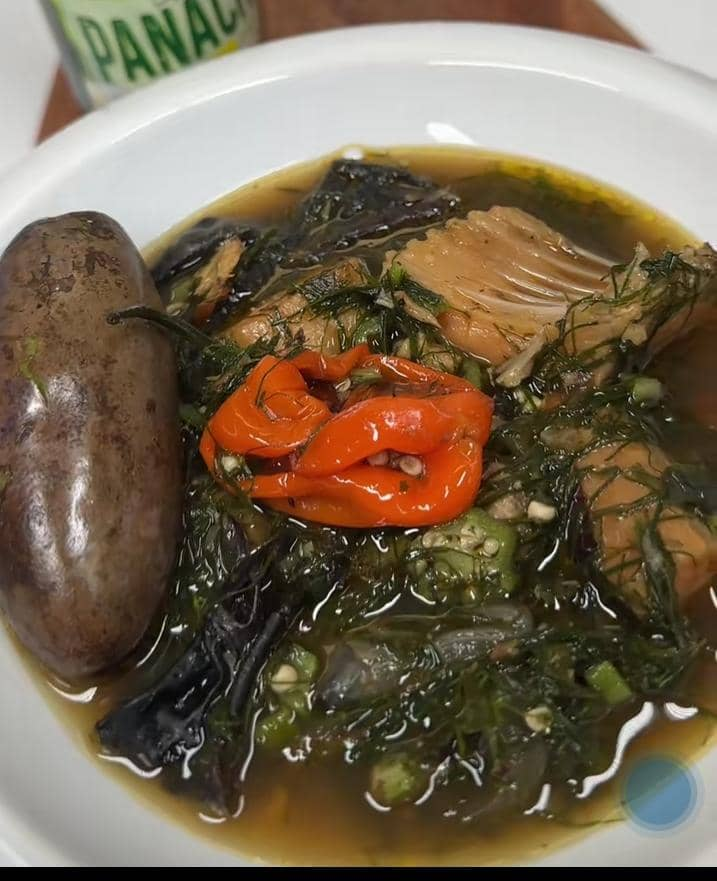
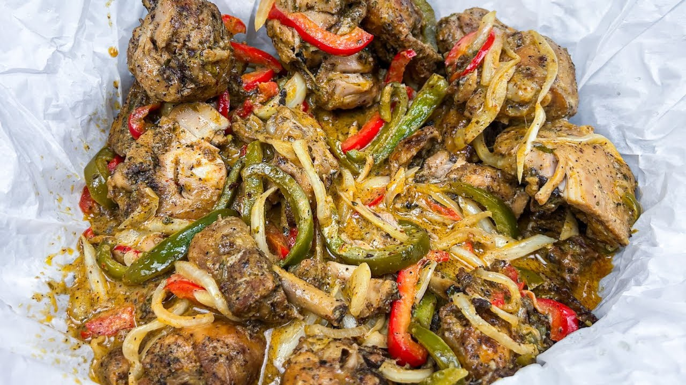
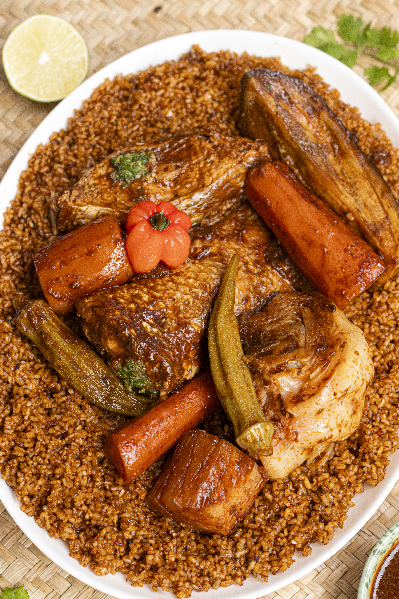

Explorez de délicieuses recettes pour ravir vos papilles !

🍽️ Service : Servir chaud avec riz, manioc ou plantain. Bon appétit 😋 !

Service : Accompagner de riz ou manioc.

Servir avec riz ou attiéké. Bon appétit !

Service : Dresser riz + légumes + poisson. Un délice !